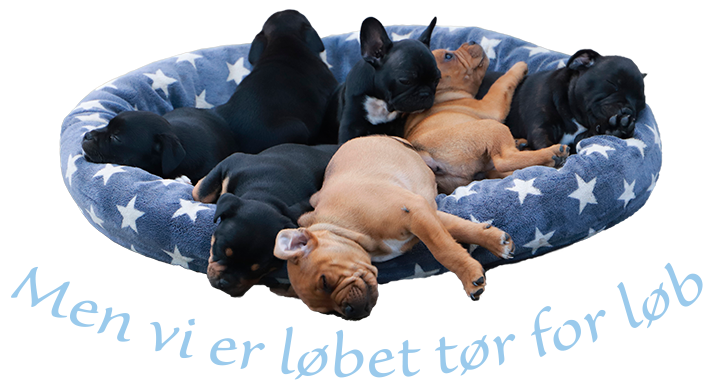
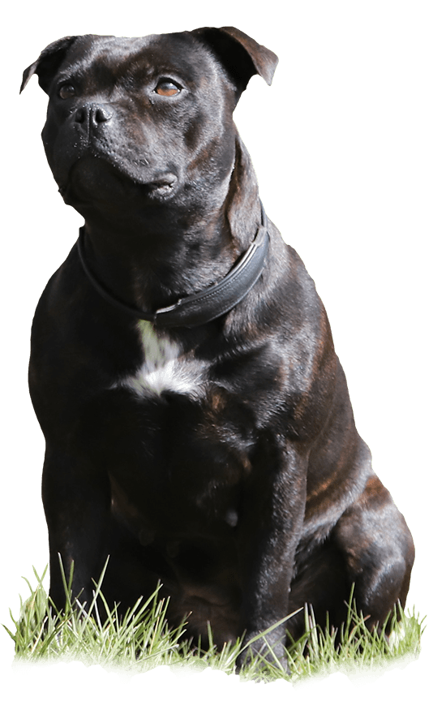

Vores Franske bulldogs
Kommer snart:
Raceoversigt - fransk bulldog
Vores Staffordshire Bull Terriere
Buffy
Køn
Tæve
Fødselsdag
20/08-17
Farve
Mørkbrindle/hvid
Vægt
16 kg
Buffy er en racetypisk, smuk staff tæve. Hun har et skønt sind og elsker sine mennesker, og følger dem som en skygge. Hun er energisk og har altid et stort smil på mulen.
Ekstra info
Mor
Silkstaff’s Live or Let
Die
Far
Charly Brown De La Fuente de Los
Ac
Sundhedsoplysninger
HD: A/A
(06.03.2019)
AD: 0/0 (06.03.2019)
HC: Fri (01.04.2019)
L-2-Hga: Fri (01.04.2019)
DKK Registreringsnr
14360/2017
Er udstillet. Avlsgodkendt.
09.02.2029 Fredericia
EXCELLENT med CK, 2. plads. JR. CERT,
Feminin tæve I stærk udvikling, middel mørke øjne, ganske godt udtryk, korrekt
bid, god
korrekt bredde på skallen, korrekt rosenøre front behøver mere tid, normale
ben-stammer,
behøver fylde i lændeparti, skal få mere bestemthed i sine bevægelser,
fantastisk humør.